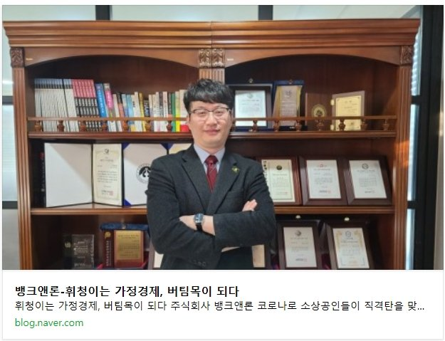

공지사항뱅크앤론 - 휘청이는 가정경제, 버팀목이 되다 [스포츠조선]원본 등록일 2021.04.29 · 글 번호 151 · 백업 당시 조회수 2884 https://blog.naver.com/sys8949/222170075457[출처] 뱅크앤론 - 휘청이는 가정경제, 버팀목이 되다 [스포츠조선] (뱅크앤론 (직장인대출,개인회생자대출,개인회생대출 등..)) | 작성자 뱅크앤론 매니저